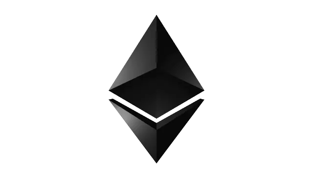
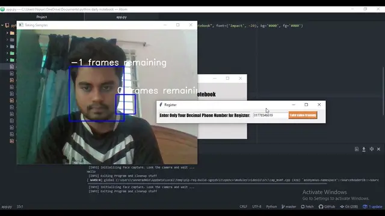

B.Sc. in Computer Science & Engineering
2018 – 2023Ahsanullah University of Science and Technology (AUST), Dhaka
CGPA 3.38 / 4.00 · 3.66 over the final five semesters · Thesis: Blockchain-Based Decentralized Election System

$ whoami
Senior Software Engineer at Enosis Solutions · B.Sc. in CSE, AUST
I build reliable, data-driven software. For the past 3+ years at Enosis Solutions in Dhaka, I have designed and shipped full-stack enterprise systems (project management, payment approval and workspace reservation platforms) with TypeScript, NestJS, React and PostgreSQL.
My research spans natural language processing for low-resource languages, with an IEEE paper on Bengali–English neural machine translation, and blockchain-based systems, the subject of my undergraduate thesis on a decentralized election system. I want to pursue graduate study to build technology that is sustainable, inclusive and socially responsible.
Interested in graduate study (MS)Machine translation for low-resource languages and Bengali NLP with deep learning.
Decentralized applications, consensus and security for trustworthy public systems.
Architecture and performance of large systems, informed by industry practice.
Bengali-English Neural Machine Translation Using Deep Learning Techniques
2023 3rd International Conference on Electrical, Computer and Communication Engineering (ECCE), CUET, Chittagong, Bangladesh. IEEE, 2023.
@inproceedings{paul2023bengali,
title = {Bengali-English Neural Machine Translation Using Deep Learning Techniques},
author = {Paul, Nipun and Faruki, Ishmam and Pranto, Mutakabbirul Islam
and Shawon, Md. Tanvir Rouf and Mandal, Nibir Chandra},
booktitle = {2023 3rd International Conference on Electrical, Computer and
Communication Engineering (ECCE)},
year = {2023},
doi = {10.1109/ECCE57851.2023.10101491}
}Blockchain-Based Decentralized Election System
B.Sc. Thesis, Department of CSE, Ahsanullah University of Science and Technology.
A secure, transparent and tamper-proof voting system on Ethereum, designed for the context of Bangladesh, that uses a distributed ledger to provide election integrity, voter anonymity and real-time verifiability.
Enosis Solutions
Project Management System · NestJS, React, PostgreSQL
Payment Approval System · PERN stack
Desk Reservation System · PERN stack




Ahsanullah University of Science and Technology (AUST), Dhaka
CGPA 3.38 / 4.00 · 3.66 over the final five semesters · Thesis: Blockchain-Based Decentralized Election System
Rajuk Uttara Model College, Dhaka
GPA 5.00 / 5.00
Anjuman Adarsho Govt. High School, Netrokona
GPA 5.00 / 5.00
I’m happy to talk about research collaborations, graduate opportunities or engineering work. Email is the fastest way to reach me: